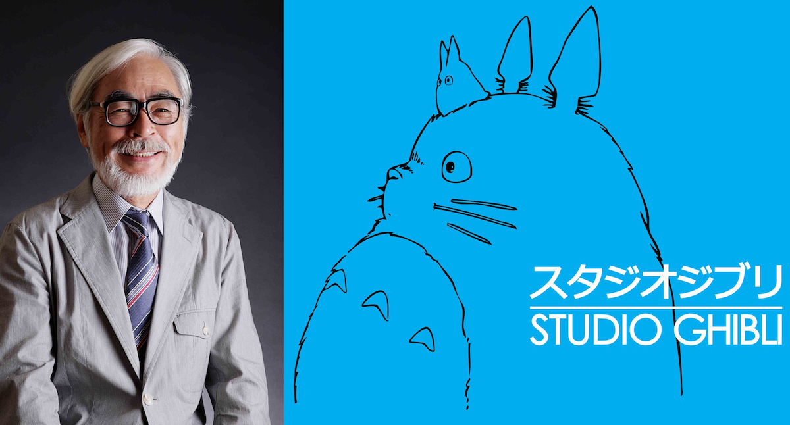

Hayao Miyazaki est un réalisateur japonais qui a marqué l'histoire de l'animation avec ses films captivants et touchants. Il est connu pour sa capacité à créer des mondes imaginaires qui plaisent à tous les publics, des enfants aux adultes.
Miyazaki a commencé sa carrière en 1963 et a depuis produit de nombreux films, dont "Mon voisin Totoro" (1988), "Kiki la petite sorcière" (1989) et "Le Voyage de Chihiro" (2001), qui est considéré comme l'un de ses plus grands succès. Ce film a remporté de nombreux prix, y compris l'Oscar du meilleur film d'animation en 2003.

Le style de Miyazaki est caractérisé par des personnages forts, souvent des filles, des histoires touchantes et des mondes imaginaires riches en détails. Ses films incluent également des thèmes importants, tels que l'importance de la nature et de la préservation de l'environnement.
Miyazaki a également été salué pour sa capacité à capturer la complexité des émotions humaines dans ses films, ce qui en fait une expérience enrichissante pour le tout public. Ses films sont souvent décrits comme poétiques, magiques et touchants, et ont gagné un grand nombre de fans à travers le monde.
En conclusion, Hayao Miyazaki est un réalisateur qui a créé des films qui plaisent à tous les publics. Ses œuvres sont riches en histoires, en personnages captivants et en mondes imaginaires, et ont laissé une empreinte indélébile sur l'industrie de l'animation. Les fans de Miyazaki continuent de se passionner pour ses films et sont inspirés par ses thèmes importants et sa capacité à capturer la complexité des émotions humaines.
